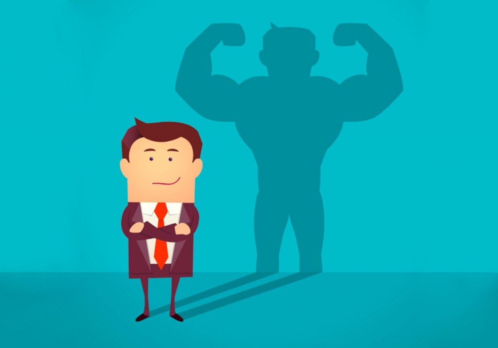

TEMA 2
digital de capacidades encamina a la persona hacia mayores posibilidades de crecimiento social para ampliar su conocimiento, pero también su acción. Los individuos son conscientes de sus propios derechos y capacidad de organización por sí mismos, con menos dependencia de un sistema u organismos. A través de las redes sociales, la ciudadanía se comunica y entrama un sistema de relaciones, que puede volverse poderoso. Son los movimientos sociales y contestatarios de antes, que se formaban en grupos físicos y en las calles y hoy en día, tienen su altavoz en los socialmedia.
Este empoderamiento digital trae consigo:
Acceso a internet y dispositivos móviles, ser activos en la red y disponer de terminales (portátil, tableta, teléfono móvil o smartphones)
Conocimiento digital, aprendizaje continuo de los avances tecnológicos y de cada novedad
Reputación y presencia digital, ser conscientes de nuestro valor añadido
Marca personal, la forma de impulsar nuestro historial profesional con un enfoque comercial y corporativo
Uso de datos en la red, conocimiento de la información cuantitativa de cifras y datos en internet
Innovación, dar el paso del uso de la tecnología hacia la creatividad
Acción cualitativa, es el fortalecimiento como individuo en sus capacidades digitales. En el ámbito laboral, las empresas están moviéndose en el concepto de transformación digital para reinventarse a través de la utilización de la tecnología digital para mejorar su modus operandi en este nuevo paradigma. Así un individuo puede iniciar el camino del emprendimiento en este misma idea de transformación digital
